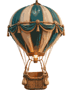

Esta vez, Madrid de verdad.
Fotografía aérea y edificios 3D reales. Sobrevolaremos las calles con cámara cinematográfica y el globo de Villa Pérez.
La Demo Key no requiere tarjeta si tu cuenta personal es elegible. Para una clave de producción, limita el uso a Maps JavaScript API y a este dominio. La clave no se publica en GitHub.
Se conserva en este navegador. Si la dejas vacía, el mapa usa Puerta de Alcalá como origen de demostración, sin atribuírselo a la clínica.
El origen es de prueba. Para introducir un domicilio hay que habilitar Geocoding; para seguir calles reales, Google Routes. El destino se procesa en Google y el vuelo termina antes de los últimos 180 m.
Prototipo independiente. No usa la dirección real de la clínica. La fotogrametría depende de la cobertura de Google y el rendimiento del iPhone.


¡El Ratón Pérez está muy cerca!
La cámara ha sobrevolado la ciudad a altura estable y ha rodeado el destino para enseñarte sus calles y edificios. Los últimos metros hasta casa serán un secreto.